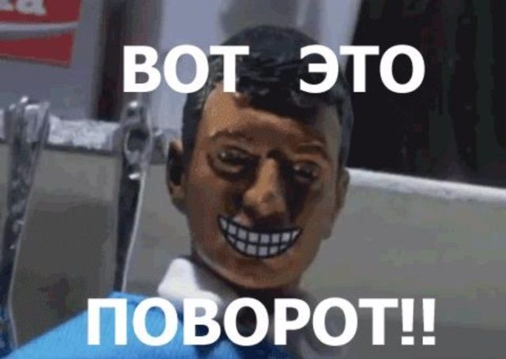
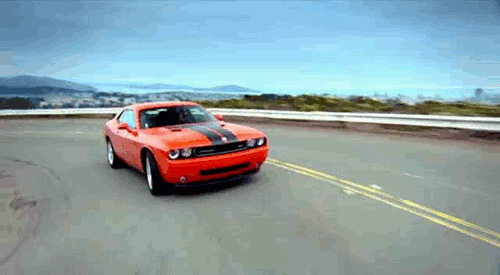
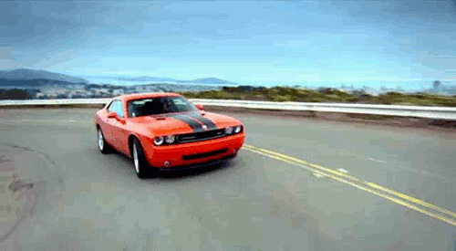

Итернет-мем


Интернет-мем (англ. Internet meme) — информация в той или иной форме (медиаобъект, то есть объект, создаваемый электронными средствами коммуникации, фраза, концепция или занятие), как правило, остроумная и ироническая[2], спонтанно приобретающая популярность, распространяясь в Интернете разнообразными способами (посредством социальных сетей, форумов, блогов, мессенджеров и пр.). Обозначает также явление спонтанного распространения такой информации или фразы. Вошло в употребление в середине первого десятилетия XXI века.
Вверх
Поворо́т


Поворо́т (враще́ние) — движение плоскости или пространства, при котором по крайней мере одна точка остаётся неподвижной.
Вверх
Аниме

Аниме́ (от англ. animation «анимация») — японская анимация. В отличие от мультфильмов других стран, предназначенных в основном для просмотра детьми, бо́льшая часть выпускаемого аниме рассчитана на подростковую и взрослую аудитории, и во многом за счёт этого имеет высокую популярность в мире[3]. Аниме отличается характерной манерой отрисовки персонажей и фонов. Издаётся в форме телевизионных сериалов, а также фильмов, распространяемых на видеоносителях или предназначенных для кинопоказа. Сюжеты могут описывать множество персонажей, отличаться разнообразием мест и эпох, жанров и стилей.
Вверх
Dodge Challenger
 

Dodge Challenger — культовый маслкар производства компании Dodge, принадлежащей концерну Chrysler Corporation. Был предназначен конкурировать с такими автомобилями, как Chevrolet Camaro, Ford Mustang, Mercury Cougar и Pontiac Firebird.
Вверх